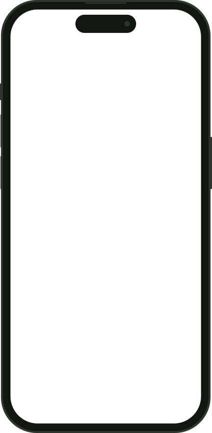

A home battery survey. From your iPhone.
Walk the wall around your electric meter with an iPhone. The app measures it, and an installer checks the spot it suggests.

What one walk records.
SeenA close-up of the meter, then the wall and ground to the corner.
MeasuredThe window, marked by two corners: 3 ft 3 in by 3 ft 7 in.
PlacedA possible spot 12 ft from the meter, for an installer to check.
What leaves the phone, and what comes back.
-
Walk and markThe iPhone tracks the wall and what it has seen.
-
Photos, poses and marksOne capture packet for the whole walk.
-
Placement rulesWritten rules, not a model. Each check passes, fails or stays unsure.
-
A spot, or one more viewUnsure checks ask for a better view.
-
See it on your wallIn AR. An installer reviews every result.
From camera frames to a wall in feet.
Four layers from ARKitEvery iPhone tracks the camera. LiDAR iPhones add depth and a mesh.
Select a layer to see what it adds.
Each frame comes with the camera's pose, a 4 × 4 transform in ARKit's world space. Keyframes keep the image, the pose and the lens intrinsics.
On an iPhone with LiDAR, sceneDepth adds a distance for every pixel. Without it, the app works from images and poses alone.
LiDAR iPhones also rebuild the surroundings as a triangle mesh, and ARKit labels each face: wall, floor, door or window.
ARKit detects the wall and the ground as planes. .gravity alignment points +y straight up, so the wall stands vertical in every frame.
The wall, measured in feetHouseScanKit puts every mark at s, feet along the wall from the meter.
What the phone writesThe wall, your marks, what the walk saw and each keyframe's pose, in one small file.
scene.jsonAbridged, example values
{
"meter": {
"pos": [0.0, 4.6, 0.0],
"wall_id": "front"
},
"walls": [{
"id": "front",
"baseline": [[-2.5, 0], [14.8, 0]]
}],
"objects": [{
"type": "window",
"wall_id": "front",
"span_ft": [4.6, 7.9],
"attrs": { "operable": false },
"source": "tap"
}],
"coverage": { "observed": [{
"band": "ground",
"span_ft": [-2.5, 14.8],
"out_ft": 6.0
}] },
"keyframes": [{
"img": "k9.jpg",
"pose": [1, 0, 0, 0,
0, 1, 0, 0,
0, 0, 1, 0,
9.0, 4.8, 6.0, 1]
}]
}The server rebuilds the wall from the photos.
The capture packet carries each photo with its ARKit pose, LiDAR depth when the phone has it, and your taps. The server measures the wall in 3D, checks the rules and answers with a spot or the view it still needs.
-
Capture packetPhotos, poses and depth upload in stages; finalizing starts the run.
POST /v1/captures -
Metric reconstructionCOLMAP refines ARKit's poses. Depth comes from LiDAR or π³, scale from LiDAR or the meter.
poses · scale · dense -
Scene and rulesWalls, ground, equipment and what was actually seen. Rules decide; other checks can only veto or downgrade.
scene · criteria -
ResultA spot for an installer to review, or the views still needed, placed in AR.
GET …/result
GET …/eventsProgress from each stage, back to the phone
result.jsonAbridged, example values
{
"status": "needs_views",
"outcome": {
"kind": "needs_more_photos",
"viewsNeeded": [{
"id": "vn1",
"kind": "band",
"band": "ground",
"side": "left",
"sM": [-1.8, -0.2],
"viewingAngleDeg": [20, 60]
}]
},
"criteria": [{
"id": "route_length",
"outcome": "pass",
"measuredFt": 14.0,
"plusMinusFt": 0.6,
"coverage": "observed"
}]
}Unseen ground stays unsure.
The walk went right, so the ground left of the meter was never seen. Drag across the wall to show it, and the checks settle.
A closer spot, 5 ft left of the meter
Not here
- Wall behind itPass
- Ground under itPass
- Clear spaceFail
Rule limitEstimate and its error
The research behind the pipeline.
The briefing compares LiDAR reconstruction, learned depth and world models, with the tests behind each.